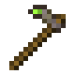
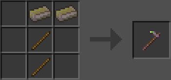

Мотика із залізного дерева
Мотика із залізного дерева — це інструмент, виготовлений зі злитків залізного дерева. На відміну від інших інструментів із залізного дерева, мотики не зачаровуються автоматично після крафту. Її можна, але не рекомендується, використовувати як зброю.
- Міцність: 512
- Шкода: 1
- Швидкість атаки: 3
- Швидкість копання: 8.5 (як залізні інструменти)
- Зачаровуваність: 25
- Відновлюваний: так
- ID: twilightforest:ironwood_hoe

Майстрування
